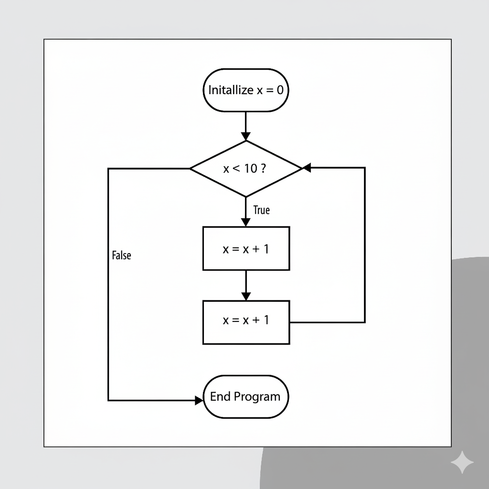

疑似言語 (Pseudo-code)
疑似言語は、人間がわかりやすいように簡単な英語や日本語で書くアルゴリズムの説明です。
実際にはプログラムを走らせません
It is not a real programming language, but close to English and code.
# 最大値を求める (Find maximum)
max = a[0]
for i from 1 to n-1:
if a[i] > max:
max = a[i]
print max
流れ図 (Flowchart)
例: x を 0 から 9 まで数える。
アルゴリズムの基本構造
- 順次処理 (Sequence)：上から順に実行
例：x=1 → y=x+2 → print y - 分岐処理 (Selection)：条件によって道を選ぶ
例：if x>0 then print "positive" - 繰り返し処理 (Iteration / Loop)：同じ処理を何度も
例：for i=1 to 10 do print i
この3つを組み合わせれば、どんなアルゴリズムも表現できます！